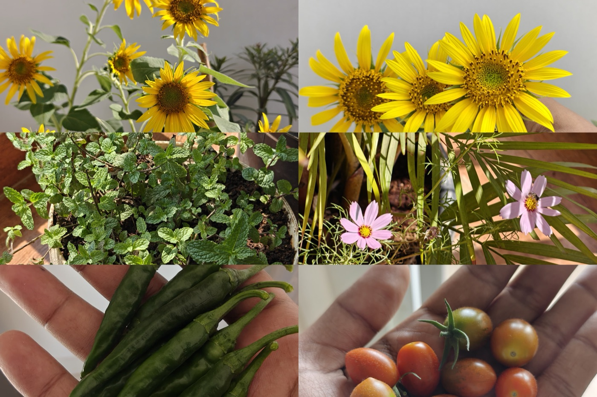
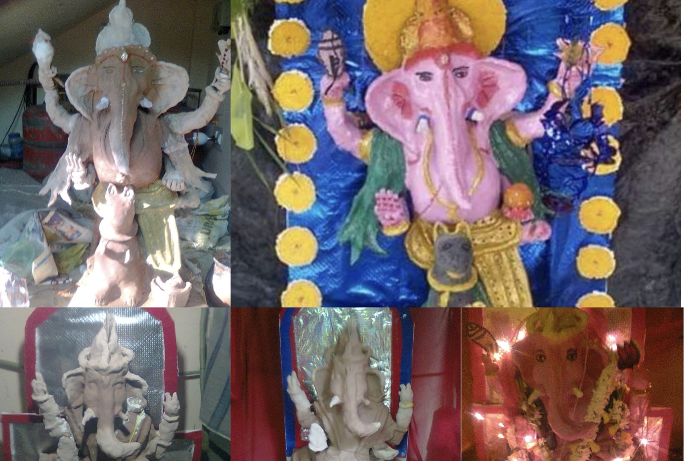
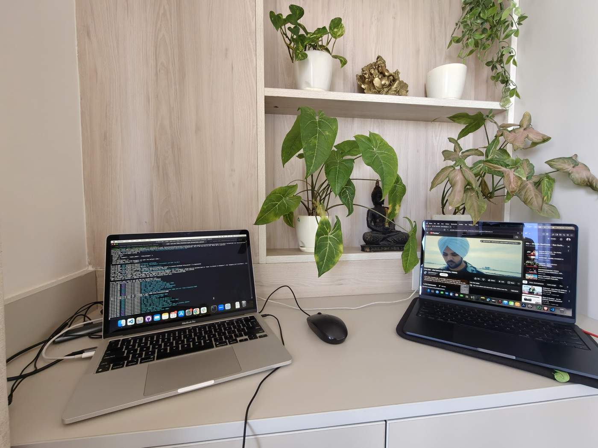

Off the clock
What I do away from the keyboard.
The same patience I bring to systems, I bring to slower, hands-on things.
Building is a through-line, but it's not the whole story. A few things I tend to outside of work — they keep my eye sharp and my hands busy.

Balcony Gardening
14 potsA balcony of herbs, chillies, tomatoes, and stubborn succulents. Every morning I check what's sprouted overnight — it's the closest thing I have to a no-deploy feedback loop.
There's something grounding about keeping things alive that don't run on batteries. Gardening has taught me more about patience and iteration than most sprints have. A chilli plant doesn't care about your deadline — it moves at its own pace, and that's the point.
Painting
acrylic & gouacheMostly landscapes, quiet interiors, and the occasional abstract experiment. Painting is the one thing I do where there's no user to satisfy — only the canvas.
Working with acrylics and gouache has quietly sharpened my eye for colour, contrast, and composition — things that translate directly to UI work. When I'm stuck on a layout, sometimes the best thing I can do is pick up a brush instead of a keyboard.

Clay & Pottery
hand-builtThrowing and hand-building bowls, planters, and small vessels. Working with clay is a reminder that some things can't be ctrl+Z'd — every choice is permanent once it's fired.
Clay has no undo history. That constraint is uncomfortable at first, and then liberating. Each piece teaches the same lesson: form follows the material, not the plan. It's the most honest medium I've worked with — and the messiest.

Building apps
nights & weekendsSide projects are where I try ideas with no roadmap, no stakeholders, and no retrospectives. Small tools that scratch a real itch — and occasionally grow into something people actually use.
Some of my best work started as a weekend experiment. InsightTrack, SeasonalFX, NPMLens — none of them began with a spec document. They started with a question: "why doesn't this exist yet?" Nights and weekends are where I find out.